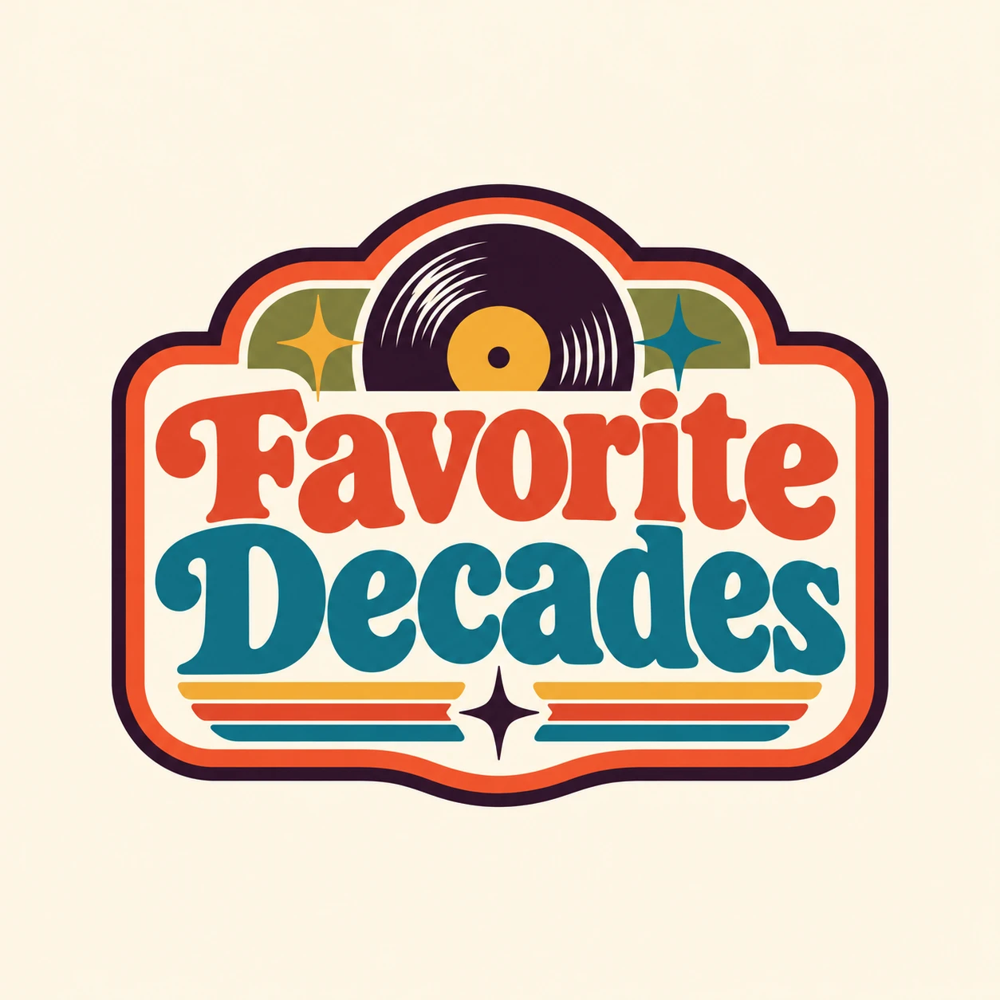

Favorite Decades
Nostalgia from every decade, 1920s to 2000s
Real photos from the archives, the true stories behind them, and the everyday things we still remember: the diners, the toys, the songs, the road trips.
Our new home is under construction. Join the newsletter and we'll send you the best of each week, starting when the site opens.